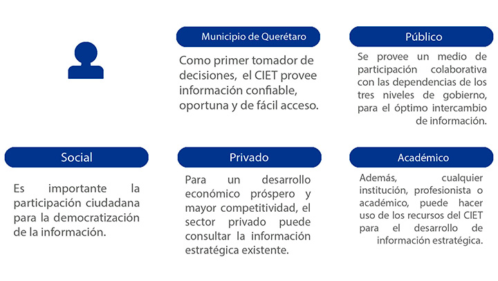
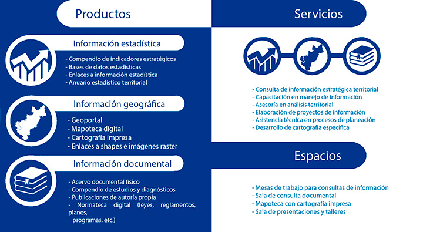
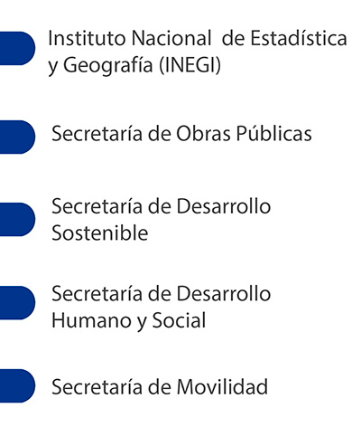
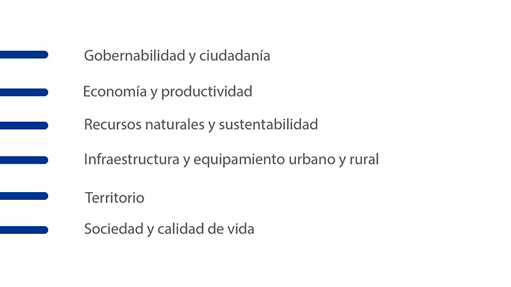

El Centro de Información Estratégica Territorial (CIET) es la unidad del IMPLAN del Municipio de Querétaro,
el cual se constituye como un espacio físico y virtual que se encarga de integrar, generar, gestionar,
analizar y difundir información estadística,
geográfica y documental para facilitar la toma de decisiones estratégicas en la planeación territorial del Municipio de Querétaro.
USUARIOS
La información publicada por el CIET es de carácter público, sin embargo,
tiene un enfoque estratégico, por lo que los usuarios potenciales son los que se describen a continuación.

PRODUCTOS Y SERVICIOS
Los productos y servicios ofrecen información confiable, oportuna y de fácil acceso mediante procesos optimizados.
Con estos productos y servicios el IMPLAN se consolida como un espacio de participación ciudadana y proveedor de información.

FUNCIONES
ALIANZA Y RED DE ACTORES
Son los organismos, las dependencias y secretarias del Municipio de Querétaro y zona metropolitana, vinculados con la información, decisiones, políticas, planes y programas gubernamentales,
sociales y privados con los aspectos de planeación y desarrollo urbano que colaboran con el CIET para el procesamiento de los productos y servicios.

TEMAS ESTRATÉGICAS TERRITORIALES
La información estratégica territorial es un conjunto de datos en información que conforman un sistema de indicadores,
de importancia fundamental para el entendimiento de los fenómenos y toma de decisiones que se manifiestan en el territorio. El CIET divide esta información en las siguientes categorías.
